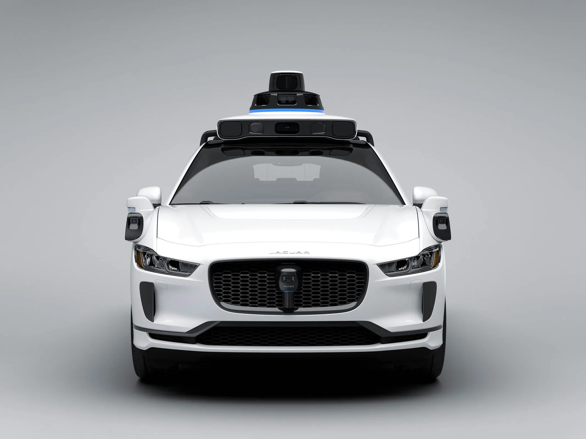
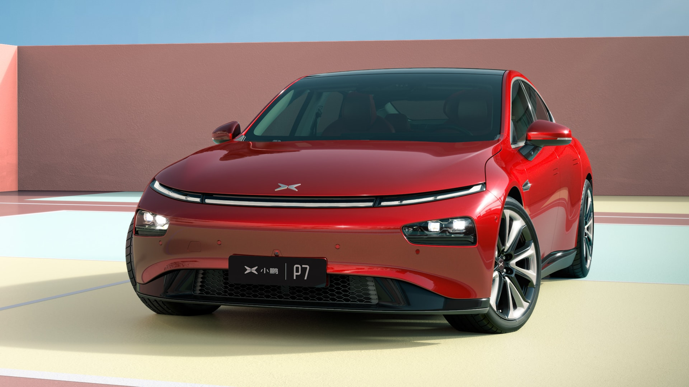
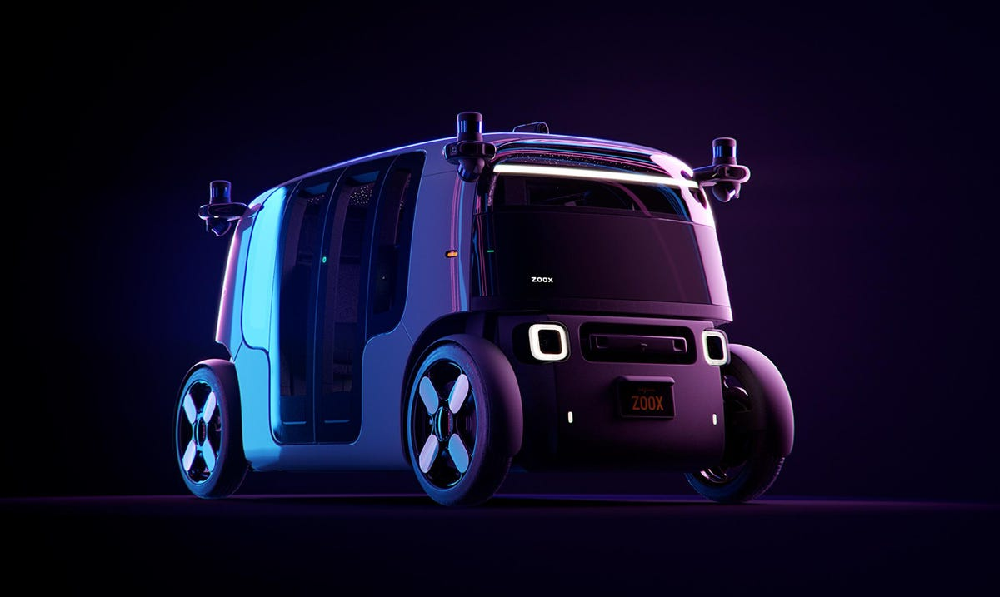

The Tesla car is named in honor of
Nikola Tesla, the creator of
alternating current. Its headquarters
are in the Gigafactory in Texas.
When Tesla was founded on July 1,
2003, it set out to produce a
potent, gorgeous, and emission-
free electric vehicle. Tesla
continues>to concentrate on
developing electric vehicles
and producing EV powertrain
systems and components as part
of its formula for success. By
2021, the business will
have a network of 438
shops and galleries, 100
service sites, and more than
30,000 Superchargers (charging
portals) spread across more than
3,100 locations. Tesla is
committed to launching
innovative products that
appeal to a wider
spectrum of customers.
Tesla Motors is growing its operations internationally in order to stay competitive in specialized markets.Autopilot, a sophisticated driver assistance system that enhances convenience and safety while driving, is their main piece of technology. Autopilot lessens your overall workload as a driver when used appropriately. Eight exterior cameras and advanced visual processing are included in every new Tesla vehicle to give an extra measure of security.
TESLA
As one of the Waymo Driver's
most powerful sensors, lidar paints a
3D picture of its surroundings, allowing
us to measure the size and distance of
objects 360 degrees around our vehicle
and up to three hundred meters away
Radar: Radar adds to both lidar and cameras with its unique ability to see and measure an object's speed and direction, helping us to test even in tough weather conditions such as rain, fog, and snow.
Our vision system is designed to capture more detail and provide sharper images in the toughest driving environments. With our 5th-generation Waymo Driver, our cameras provide a 360 vision system that allows us to identify important details like pedestrians and stop signs greater than 500 meters away.
In its inaugural attempt to "drive totally autonomous on 10 non-stop 100-mile routes," Waymo used Toyota Prius vehicles. It was created in 2009 and is headed by Sebastian Thrun, a co-inventor of Google Street View. In the end, the company thinks completely autonomous vehicles would improve transportation for all, be safer, and free up people to do other things except spend time behind the wheel. It's called sense, solve, run procedure is what we refer to.
WAYMO

In Guangzhou, China, Xiangpeng Motors, sometimes known as Xiaopeng, was established in 2014—two years after the introduction of the Tesla Model S. There's no doubt that it elevated the notion of "copying Tesla '' to a potentially obsessional level. When the company's initial prototypes were released, many laughed at it because they were so similar to Tesla in terms of functionality, appearance, and design. The self-learning software was developed in-house, but many of them worked on the Autopilot system, the distinctive technology recommended by XPeng, using primarily cutting-edge Nvidia processors and PCs on the hardware side. Independent research appears to show that XPeng is extremely close to Tesla's capabilities. With the use of XPENG's very effective AI capabilities, over 1,000 unusual corner problems may be solved with consistent unsupervised machine learning and quick model training iterations.
XPENG

Alignment, Positioning and Mapping
Before an autonomous vehicle can travel safely, it must have a clear understanding of its location. At Zoox, this process includes three key components: calibration, localization and mapping.
TeleGuidance
TeleGuidance assists vehicles in navigating some of the rarest and most complex driving situations.
Simulation
Simulation allows zoox to test and validate their software before it is transferred to zoox's vehicles. It also provides a safe environment to test edge cases that rarely occur in the real world.
Computer Vision
Computer vision allows zoox's vehicles to understand the intricate details of their surroundings. For example, whether a pedestrian is looking at their cell phone, or whether the flashing lights on a car mean it is an emergency vehicle.
Zoox was founded with the goal of making personal transportation safer, cleaner and more enjoyable - for everyone. To achieve this goal, the team has created an entirely new form of transportation. Zoox will provide transportation-as-a-service in dense urban environments.
ZOOX

Nio is a Chinese electric car company
that already produces several high-end models
for the premium market. nio is not yet the most
popular brand in Europe. In fact, they have only really
launched their model in Norway as a test, but they hope to
enter the UK market soon if there is enough interest.NIO is a pioneer
and leading company in the premium smart electric vehicle market. Founded
in November 2014, NIO's mission is to shape a happy lifestyle.
NIO differentiates itself through its continuous technological breakthroughs and innovations, such as NIO's portfolio includes the ES8, a six-seat smart electric flagship SUV; the ES7 (or EL7), a mid-size five-seat smart electric SUV; the ES6, a five-seat all-around smart electric SUV; the EC7, a five-seat smart electric flagship coupe SUV; and the EC7, a five-seat smart electric coupe SUV. EC7, five-seat smart electric coupe SUV EC6, smart electric flagship sedan ET7, and mid-size smart electric sedan ET5.